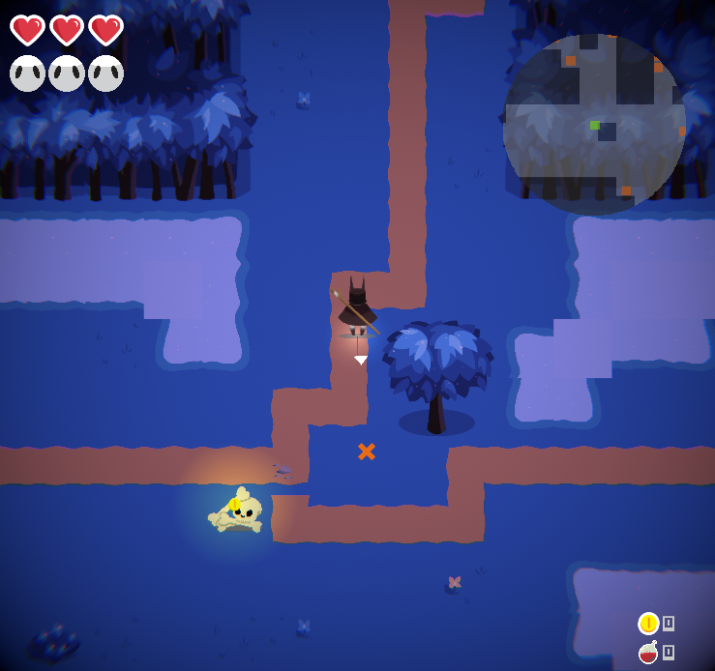
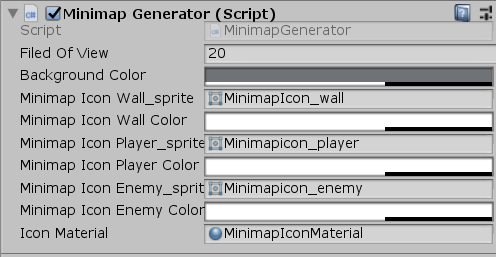

DREAMWILLOW

ABOUT
Dreamwillow is a lighthearted 2D top down twin stick shooter game about a necromancer
ressurecting their foes to help them escape a dark forest.
A long term project completed over a semester by around 30 University of Michigan students.
DEVELOPMENT INFO
-
Developed by WolverineSoft Studio
-
3 month development cycle (09/08/2019 - 12/08/2019)
-
30 developers
-
Made using Unity Engine
CONTRIBUTIONS
CONTRIBUTIONS

My major contribution to this project was the designe and implementation of the mini-map system
which is compatible with procedural generated levels and also allowing newly designed/implemented enemies by other developers can
be automatically compatible with the mini-map system without touiching code or refering back to me.

To achieve the compatibility, I design and implement an algorithm that when entering a new level,
after the level is generated, will detect all kinds of objects on the level,
and generate corresponding minimap icon to bind to each object.
Also, I also created an editor panel to allow the art team to easily adjust the aesthetics of the minimap without touching the code.